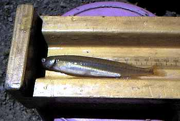

君よ知るや南の国
ニュージーランドの海の釣魚 （２）
皆さんこんにちは！
ニュージーランド北島、ハミルトン市からお届けします「君よ知るや南の国」です。ハミルトンは12月となって夏らしい暑い日が多くなってきました。でも、今日のような雨の日には、肌寒い感じもします。
さて、二回目の今日は、ＮＺの珍しい海の釣魚をご紹介いたします。 （注：珍しいといっても、山育ちの私が日本の海の魚を知らないだけですので、これなら日本でも釣れるよ！ということが大ありだと思いますがご了承ください.....）
Barracouta：バラクータ （クロタチカマス）
バラクータというと、ダイビングを楽しむ人が襲われたりすることもある凶暴な魚というイメージがあるのですが、見かけによらず食べておいしい魚だそうです。ニュージーランドで人気のあるＴＶ釣り番組の司会者、ビル・ホヘパ氏の著書によれば、バラクータ釣りはとてもスリルのあるスポーツで、一人の釣り人が96ダース！のバラクータを釣ったのが記録されているそうです。大きさは最大で1.8mまでに成長するようです。
John Dory：ジョンドーリー （ニシマトウダイ）
魚体の側面、ほぼ真ん中に付いている大きな黒い斑点が目印のこの魚は、人気のある釣魚で、とても美味しい魚だそうです。言い伝えによれば、キリストの時代に、使徒ペテロがこの魚を水からすくい上げ、銀貨を口から取り出した時にその黒斑が付いたとされています。最大は60cm程度。
Shark：シャーク （各種のサメ）
ニュージーランドでは、少なくとも12種以上のサメがいるようですが、小さいものは食用として釣られることがあるようです。オークランドの淡水釣りクラブ（Auckland Freshwater Anglers Clum）の月例会で、ソルトウォーターフライフィッシングを紹介する講演を聞いた時、サメ釣りのビデオが上映されました。ボートに寄ってきたサメをゴツいフライロッドと30cm以上ありそうなストリーマー（カジキ釣りのルアーに似た毛針）で釣るのですが、2m以上あるサメがぐおぉっと浮上してきてストリーマーを襲うシーンは凄い迫力でした。
ちなみに、ニュージーランド北島北部の海岸では、映画「ジョーズ」で有名になったホオジロザメも目撃されることがあるようです。
Whitebait：ホワイトベイト （？？？？）
日本で言えば、シラスとかシラウオに似ているホワイトベイトは、ニュージーランドではとても人気のある魚です。と言っても、大きさは５センチほどなので、もっぱら網で捕らえられます。ホワイトベイトというのは総称で、五種類の Galaxia属の淡水魚が含まれています。ホワイトベイトを構成するこれらの魚たちのうち、最も大きな割合を占めるのが
Inanga(Galaxia maculatus)：イナンガ
という魚です。この魚は秋に汽水域の草の茂みに産卵し、孵化した稚魚は海に降下して数ヶ月を過ごしたのち川に遡上して成魚になります。毎年早春、９月から10月にかけてホワイトベイトは生まれ故郷の川の河口部に群れをなして集まります。特に有名なのはニュージーランド南島西海岸、ウェストランド地方のホワイトベイトで、市場での価格も、この地方産のホワイトベイトは一段高いようです。また、ホワイトベイトを捕ることは、この地方では、「もはや一つの宗教である」と言われており、シーズン開始と共に大勢の熱狂的なファンが手に手に網やバケツを持って河口に勢揃いします。

ホワイトベイトの調理法としては、卵と小麦粉をといたものを絡めてフライパンで焼くフリッターや、オムレツが代表的なものです。私も一度、クライストチャーチのレストランで、ホワイトベイトのオムレツを食べたことがありますが、アツアツの卵の中に香ばしくて歯ごたえのあるホワイトベイトの身がとても美味しかったです。機会があれば新鮮なやつをポン酢で生でやったらどうかとも考えていますが、こちらでは奇異な目で見られるでしょう....ね。
ホワイトベイトの仲間はニュージーランド全域に棲息しており、ハミルトン市内を流れるニュージーランドで一番長い川、ワイカト川の下流域にもいます。先日、ある支流で調査のためにイナンガの親魚を採捕したのですが、網でできたバケツほどの大きさの捕獲器の中に、これまたニュージーランドでは人気のある「ベジマイト」という食品を塗り、木立で覆われた薄暗い深みに沈めておくと15分ほどで体長10～12cmほどの親魚が捕れました。親魚は、ドジョウを７割、マスを３割の比率で混ぜたような姿をしており、腹部以外は透き通ったきれいな薄緑色をしています。
ちなみにベジマイトというのは、イースト、モルト、野菜エキス、食塩、カラメルなどから作られる、一風変わった味のある食品で、トーストなどに塗って食べます。ニュージーランドやオーストラリアではポピュラーなようです。
日本であれば、この手の仕掛けにはもちろん味噌を使うところですが、お国柄の違いを感じてしまいました。
次回の調査にはぜひ味噌を使ってみたいのですが、昨今のＮＺドル安で、輸入された日本食品が軒並み値上がりしているので、かなり難しいでしょう。（笑）
次回は、乗合船で出かけたタウランガ沖の鯛釣りの模様をご紹介いたします。寒い日本ですが、皆様風邪など引かぬようお体にお気をつけ下さい。ではまた。
（参考文献： How to catch fish and where,
Bill Hohepa, HarlenPublishing, 1990）
君よ知るや南の国 目次へ
サイトマップ
ホームへ
お問い合わせ